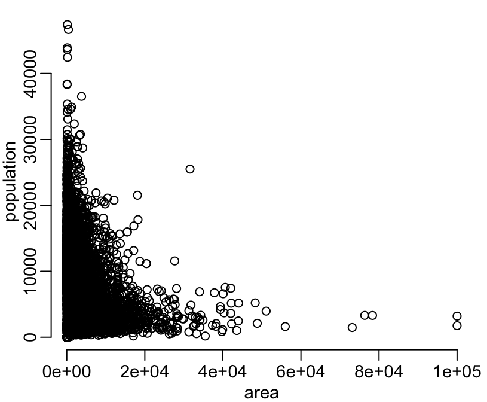

censusVN2009This package contains the polygons of the communes (11,163), districts (703) and provinces (63) or Vietnam after the last major administrative border update of 2008, January 1st (essentially the merging of the provinces of Ha Tay and Ha Noi), together with the populations sizes from the 2009 census as attributes.
You can install censusVN2009 from github with:
> # install.packages("devtools")
> devtools::install_github("choisy/censusVN2009")Once installed, you can load the package:
> library(censusVN2009)The package contains 6 SpatialPolygonsDataFrame: communes, districts, and provinces for low polygons resolution and communes_r, districts_r, and provinces_r for high polygons resolution. These objects can be loaded with the base R data function:
> data(communes)
> data(districts)
> data(provinces)And can be plotted with the sp plot method:
> library(sp)
> plot(communes)> plot(districts)> plot(provinces)The attributes of these spatial objects are:
> head(communes@data)
province_id district_id commune_id province district commune
1 101 10101 1010101 Ha Noi Ba Dinh Phuc Xa
2 101 10101 1010103 Ha Noi Ba Dinh Nguyen Trung Truc
3 101 10101 1010105 Ha Noi Ba Dinh Quan Thanh
4 101 10101 1010107 Ha Noi Ba Dinh Truc Bach
5 101 10101 1010109 Ha Noi Ba Dinh Dien Bien
6 101 10101 1010111 Ha Noi Ba Dinh Kim Ma
province_vn district_vn commune_vn shape_length
1 Hà Nội Quận Ba Đình Phường Phúc Xá 0.04151832
2 Hà Nội Quận Ba Đình Phường Nguyễn Trung Trực 0.01685818
3 Hà Nội Quận Ba Đình Phường Quán Thánh 0.04304943
4 Hà Nội Quận Ba Đình Phường Trúc Bạch 0.03282108
5 Hà Nội Quận Ba Đình Phường Điện Biên 0.05202888
6 Hà Nội Quận Ba Đình Phường Kim Mã 0.03655965
shape_area area population
1 8.969931e-05 92 15767
2 1.454382e-05 16 8659
3 6.826377e-05 77 10643
4 4.780430e-05 52 11361
5 7.859887e-05 94 10552
6 4.471809e-05 48 14579
> head(districts@data)
province_id district_id province district province_vn
1 101 10101 Ha Noi Ba Dinh Hòa Bình
2 101 10103 Ha Noi Tay Ho Hòa Bình
3 101 10105 Ha Noi Hoan Kiem Hòa Bình
4 101 10107 Ha Noi Hai Ba Trung Hòa Bình
5 101 10108 Ha Noi Hoang Mai Hòa Bình
6 101 10109 Ha Noi Dong Da Hòa Bình
district_vn shape_length shape_area area population
1 Quận Ba Đình 0.18683794 0.0008190194 928 213744
2 Quận Tây Hồ 0.24473828 0.0021717781 2107 90639
3 Quận Hoàn Kiếm 0.09007917 0.0004533006 533 165080
4 Quận Hai Bà Trưng 0.16465428 0.0008393718 1032 271849
5 Quận Hoàng Mai 0.35391165 0.0034854305 3952 181170
6 Quận Đống Đa 0.16841353 0.0008634695 994 328230
> head(provinces@data)
province_id province province_vn shape_length shape_area
1 805 An Giang An Giang 2.900742 0.29203991
2 717 Ba Ria - Vung Tau Bà Rịa-Vũng Tàu 3.439338 0.16594643
3 221 Bac Giang Bắc Giang 4.514786 0.33874811
4 207 Bac Kan Bắc Kạn 4.207590 0.42559833
5 821 Bac Lieu Bạc Liêu 2.879202 0.20404993
6 106 Bac Ninh Bắc Ninh 1.685751 0.07149842
area population
1 352363.37 2130638.0
2 189836.73 822949.7
3 374156.83 1522360.0
4 486112.00 275165.0
5 253435.76 786447.0
6 79554.61 916123.0And we can verify the consistency between the 3 spatial objects:
> length(communes_r)
[1] 11163
> length(unique(communes_r$district_id))
[1] 703
> length(districts_r)
[1] 703
> setdiff(communes_r$district_id, districts_r$district_id)
numeric(0)
> length(unique(districts_r$province_id))
[1] 63
> length(provinces_r)
[1] 63
> setdiff(provinces_r$province_id, districts_r$province_id)
numeric(0)Total population size and area:
> sum(provinces$population)
[1] 77501046
> sum(provinces$area) / 100 # km2
[1] 331302.5Distributions of administrative areas:
> hist(communes$area / 100, n = 100, col = "grey", main = NA,
+ xlab = "area", ylab = "frequency")> hist(districts$area / 100, col = "grey", main = NA,
+ xlab = "area", ylab = "frequency")> hist(provinces$area / 100, col = "grey", main = NA,
+ xlab = "area", ylab = "frequency")Distributions of adminitrative units’ populations sizes:
> hist(communes$population, n = 100, col = "grey", main = NA,
+ xlab = "population size", ylab = "frequency")> hist(districts$population, col = "grey", main = NA,
+ xlab = "population size", ylab = "frequency")> hist(provinces$population, n = 15, col = "grey", main = NA,
+ xlab = "population size", ylab = "frequency")Distributions of the administrative units’ populations densities:
> with(communes@data, hist(log10(100 * population / area), n = 100, col = "grey",
+ main = NA, xlab = "population density", ylab = "frequency"))> with(districts@data, hist(log10(100 * population / area), n = 100, col = "grey",
+ main = NA, xlab = "population density", ylab = "frequency"))> with(provinces@data, hist(log10(100 * population / area), n = 15, col = "grey",
+ main = NA, xlab = "population density", ylab = "frequency"))Relationship between communes populations and areas:
> plot(population ~ area, communes@data)
> plot(population ~ area, communes@data, log = "xy")
Warning in xy.coords(x, y, xlabel, ylabel, log): 78 x values <= 0 omitted
from logarithmic plot
Warning in xy.coords(x, y, xlabel, ylabel, log): 78 y values <= 0 omitted
from logarithmic plotLet’s now map the populations sizes. Let’s first make a palette of colors form RColorBrewer:
> n <- 9
> pal <- RColorBrewer::brewer.pal(n, "Blues")Let’s find a classes intervals definition:
> library(classInt)
> tmp <- classIntervals(districts$population, n = n, style = "quantile")
> plot(tmp, pal = pal, main = NA)Once we’re satisfied with the class interval definition we can plot the map:
> plot(districts, col = findColours(tmp, pal))Same thing for the human population densities:
> tmp <- classIntervals(districts$population / districts$area, n = n, style = "quantile")
> plot(tmp, pal = pal, main = NA)> plot(districts, col = findColours(tmp, pal))